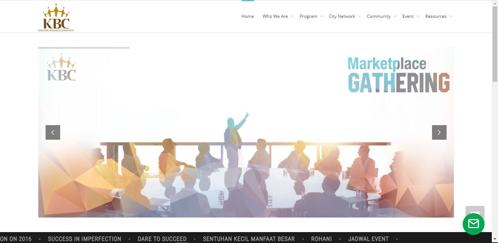

Kingdom Business Community (KBC) is a moral movement in the world of work forming nonprofit foundations with a focus on equipping business man & professionals to have a 'mindset transformation' in doing business / work with noble goals (not just profit orientation) and practicing spiritual values at work. KBC was founded on January 14, 2005 by the business & professional community in Jakarta (starting from 10 people) and has grown to more than 20,000 members in 7 cities (Jakarta, Surabaya, Semarang, Jogja, Solo, Bali, Bandung) with more than 200 mentors. I build REST API for Android Application with Laravel using PSR 12 standard.
Library that i use :